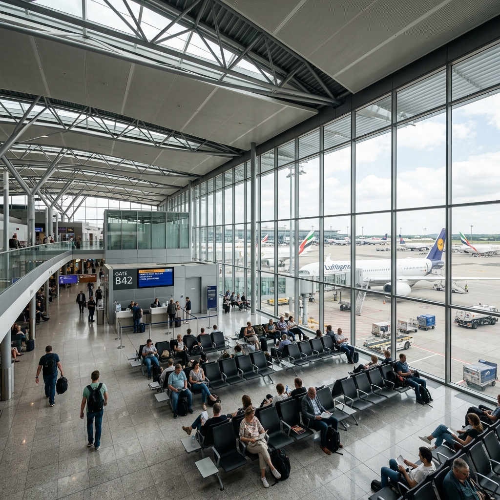
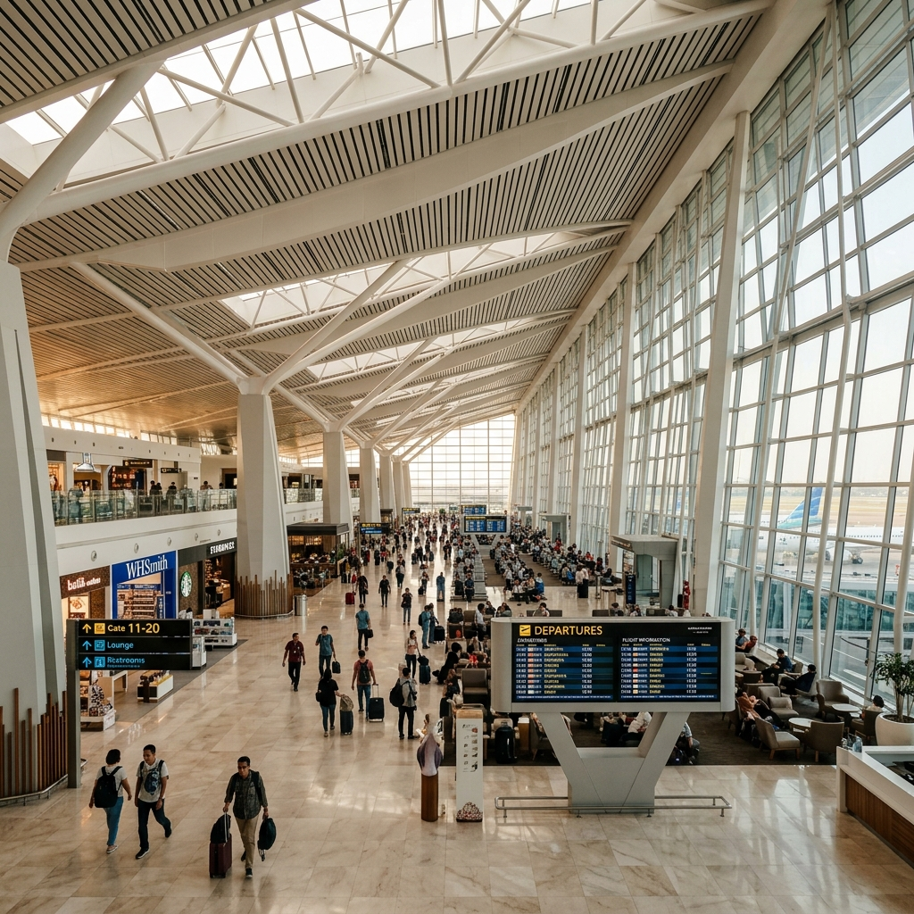

Sistem Informasi Jadwal Penerbangan Digital untuk seluruh terminal. Pilih terminal di bawah untuk melihat jadwal keberangkatan dan kedatangan secara real-time.
Terminal domestik utama — Lion Air, Batik Air, Wings Air, Sriwijaya Air, NAM Air. Melayani rute domestik ke seluruh kota besar Indonesia.

Terminal internasional low-cost — AirAsia, Scoot, Jetstar Asia, Cebu Pacific, Lion Air Internasional. Rute Asia Tenggara, Australia, dan Timur Tengah.

Terminal premium — Garuda Indonesia, Singapore Airlines, Emirates, Qatar Airways, ANA, Japan Airlines, Korean Air. Full-service carrier domestik & internasional.